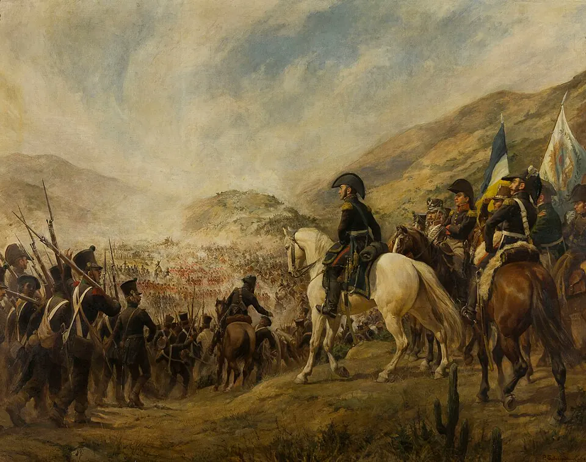

Cruce de los Andes y Batalla de Chacabuco

Tras el Desastre de Rancagua, José de San Martín, gobernador de Cuyo, organizó en Mendoza el Ejército de los Andes, con apoyo de las Provincias Unidas del Río de la Plata y de los exiliados chilenos, entre ellos Bernardo O'Higgins. Formaban parte de él numerosos libertos, antiguos esclavizados de origen africano. San Martín concebía la liberación de Chile como un paso previo para atacar el centro del poder realista en el Perú.
Mientras se preparaba la expedición, la llamada "guerra de zapa", con espionaje, rumores falsos y guerrillas como las de Manuel Rodríguez, dispersó a las fuerzas del gobernador Casimiro Marcó del Pont. En enero de 1817, el ejército cruzó la cordillera por varios pasos a la vez; las columnas principales lo hicieron por Los Patos y Uspallata. El 12 de febrero venció a los realistas en la cuesta de Chacabuco, en una batalla en la que O'Higgins encabezó una carga decisiva. Días después, un cabildo abierto en Santiago ofreció el mando a San Martín, quien lo rechazó, y O'Higgins fue nombrado Director Supremo. Comenzaba la Patria Nueva. El cruce es considerado una de las grandes hazañas logísticas de las guerras de independencia.
Versión para niños
Después de Rancagua, muchos patriotas se refugiaron en Mendoza. Allí, el general José de San Martín y Bernardo O'Higgins prepararon el Ejército de los Andes. A comienzos de 1817 cruzaron la cordillera por pasos muy altos y fríos, con soldados, caballos, mulas y cañones. Mientras tanto, en Chile, Manuel Rodríguez confundía a los realistas con sus guerrillas. El 12 de febrero de 1817, los patriotas ganaron la batalla de Chacabuco, al norte de Santiago.
Para maestros
Nivel sugerido: 6° básico
Objetivo: Comprender la dimensión americana de la independencia de Chile y valorar la planificación y el esfuerzo colectivo que exigió el cruce de los Andes.
Preguntas para la clase:
- ¿Por qué San Martín necesitaba liberar Chile para llegar al Perú?
- ¿Qué dificultades geográficas enfrentó el ejército al cruzar la cordillera?
- ¿Qué aportaron las guerrillas de Manuel Rodríguez al triunfo?
Actividad (20–30 min): En un mapa físico de Chile y Argentina, el curso traza las rutas del cruce y calcula, con ayuda de la escala, la distancia entre Mendoza y Santiago. Luego hace una lista de lo que un soldado necesitaba llevar para sobrevivir en la alta cordillera.
Fuentes sugeridas: Memoria Chilena; Museo Histórico Nacional; Biblioteca Nacional Digital.
Objetivos de Aprendizaje (Currículum Nacional)
- 6° básico · HI06 OA 01 Explicar los múltiples antecedentes de la independencia de las colonias americanas y reconocer que la independencia de Chile se enmarca en un proceso continental
- 6° básico · HI06 OA 02 Explicar el desarrollo del proceso de independencia de Chile … las batallas de Rancagua, Chacabuco y Maipú, y la Declaración de la Independencia
- 8° básico · HI08 OA 16 Explicar la independencia de las colonias hispanoamericanas como un proceso continental … y analizar en este marco el proceso de Independencia de Chile
Personajes
Revisión humana pendiente. Cómo se revisa · Reportar un error
Cómo citar: Historia de Chile. (2026). Cruce de los Andes y Batalla de Chacabuco. En Historia de Chile: atlas y línea de tiempo. https://moises-salgado.github.io/historia-de-chile/momento/cruce-de-los-andes-y-batalla-de-chacabuco.html